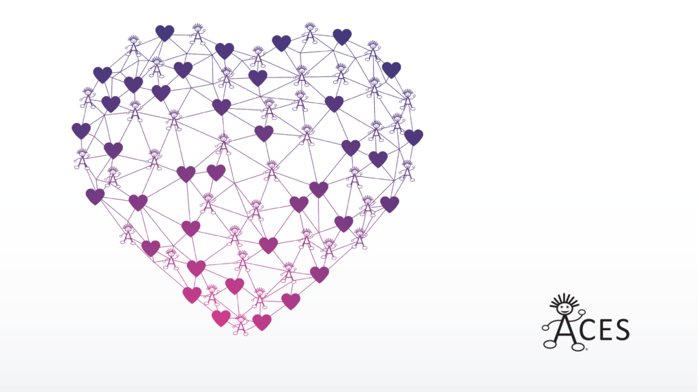
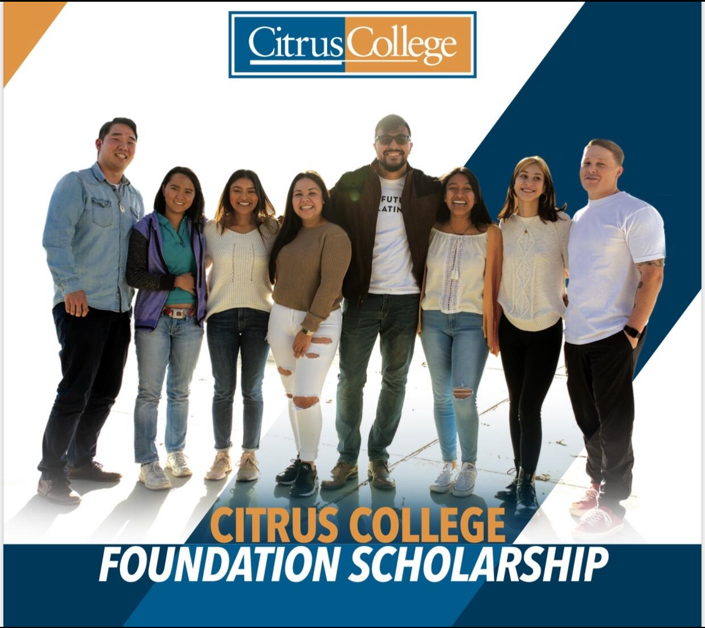
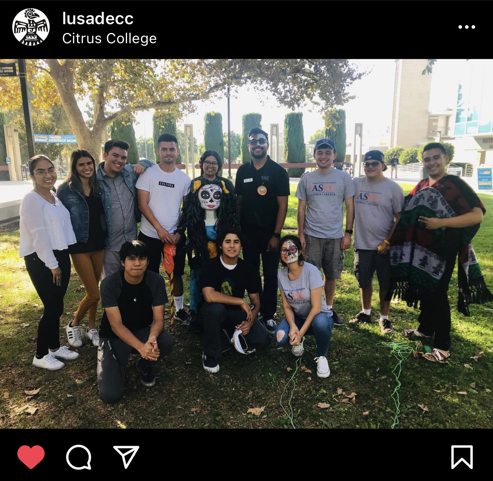
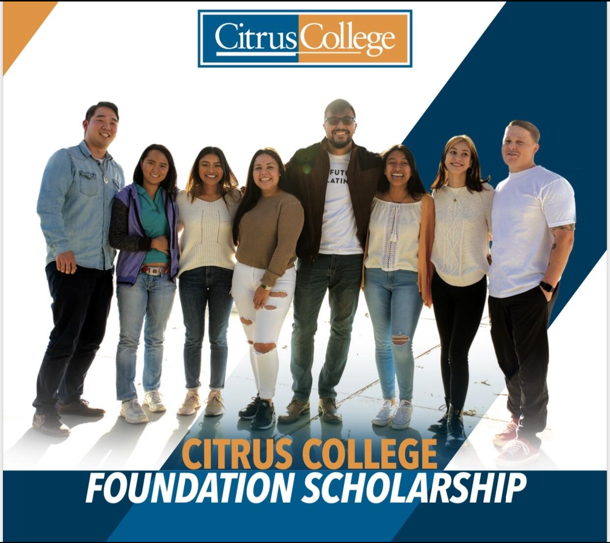
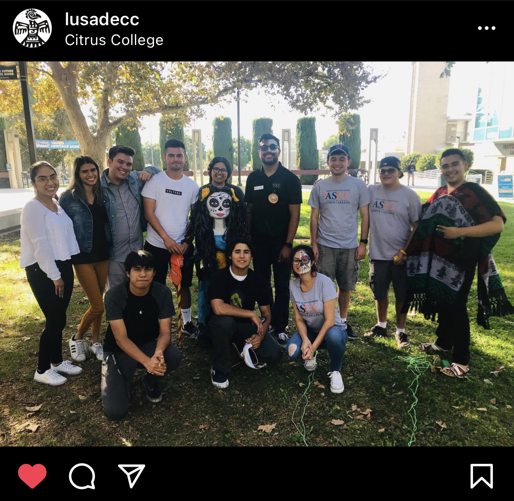

Victor Ureno
Behavior Therapist - ACES (Autism Comprehensive Educational Services)I was born and raised in the City of Hope, Duarte California. Being raised in the mid 90's was fantastic, and the city and its neighboring cities were and still are great for raising children. California weather is perfect for going out to the nearby beaches, meeting new people and hanging out with friends to play some basketball or go in the pool. Only a 10 minute drive from Los Angeles, I got to experience the LA lifestyle without the heavier traffic lines. Got to eat some of the best street food, attend outdoor festivities, and how anything can happen on any given weekend. Some of my most favorites spots aside from restaturants, include Mount Wilson for hiking, Legg lake for its Lake and frienedly animals.
I consider my self a person of too many interests and hobbies. I find learning or trying out new things is a wonderful way to live my life. Thus, my daily interets and hobbies include working out, hiking, photography, video editing on YouTube, streaming on Twitch, and spending as much time as possible with my family and friends. I have not played tennis for about a year now, and I delighted to pick up my Head racket and play a set or two with an old friend. Since COVID-19 hit the nation hard, I have found myself picking up hobbies and interests i have long forgotten about or did not have the time for them back then. Some hobbies i wish to get into would be to learn how to play a guitar and/or piano.
I am currently working on my undergraduate degree at UC Riverside, however I look forward to the wonderful events and memories that lay ahead of me once things clear up. I have heard about the wonderful experiences current and former students have had at UC Riverside. In the first month, I would explore all resourceful avenues await me on campus, I will meet and make many friends along my way journey, and I will defintely check out the famous parties i have heard about. Prior to being a student at UC Riverside, I have attended the campus and its city, which i enjoyed and spend a fufilling day and night at Riverside.
Experience
Behavior Therapist
• Provide comprehensive, professional services to maximize individuals' potential in the home, school and community, throughout their lifespan.
• Provide Applied Behavior Analysis practices to help eliminate maladaptive behaviors
• Help to make the Austim Spectrum Disorder community a much happier and healthier community
• Making the world a better place, one person at a time
Financial Aid Office Technician
• Data entry by using Banner to scan Dependent Verification WorkSheet, Promise Grant and various other forms.
• Help students understand and fill out FAFSA or Dream Act Application.
• Assist and lead with other Technicians present Financial Aid workshops.
• Continually learn about the latest updates and changes, such as the Student Success Completion Grant, Cares Act for College Students, Promise Grant maximum amount to qualify, etc.
Club President
• To encourage students from underrepresented populations to attend institutions of higher learning and become aware of the importance and opportunities for furthering their education. We strongly believe that the self-determination of our community is based on an educated community.
• To affirm and celebrate diversity amongst members (student body). This affirmation is significant in the development of positive and strong cultural identity among Raza students. We start by educating ourselves in our history, traditions and accomplishments.
• To involve students in discussing and acting on social-political issues relevant to our communities. Political activism is significant in producing civic-minded youth and leaders in our communities. We build relationships with youth and serve as a bridge between high school and college students.
• On campus and beyond we seek to open doors of higher education for our communities and strive for a society free of imperialism, racism, sexism, and homophobia.
Education
University of California, Riverside
University of California, Riverside
Portfolio




 